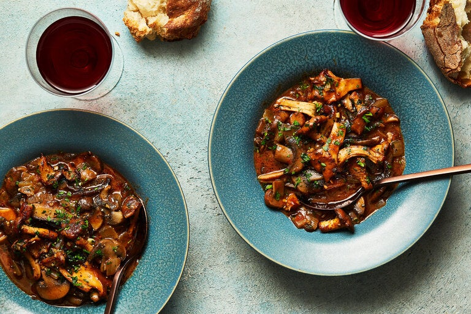

Mushroom Stew

Craving wild mushrooms? My compromise is to make a stew using mostly cultivated mushrooms. But I give them a boost of wild flavor in a couple of ways. The first is to make an intense, flavorful broth with a handful of dried porcini. The other is to actually buy some wild mushrooms. A scant half-pound of chanterelles, even if pricey, won’t break the bank. The rest of the rustic stew (call it a ragout if you wish) is made of shiitake, cremini and oyster mushrooms. As it simmers, this saucy, herbaceous mushroom stew gains depth and character. Spooned over pasta or nestled up to a soft mound of polenta, it evokes the comfort of home and the primal in each bite.
Ingredients
- 1½ pounds brown mushrooms, like shiitake, cremini or portobello
- ½ pound wild mushrooms, like chanterelle, or use King trumpet or oyster
- 4 tablespoons extra-virgin olive oil
- 1 large onion, diced
- Salt and pepper
- 1 teaspoon chopped thyme
- 1 teaspoon chopped sage or rosemary
- Pinch of red-pepper flakes or ground cayenne
- 1 tablespoon tomato paste
- 3 small ripe tomatoes, peeled, seeded and chopped
- 1 tablespoon all-purpose flour
- 2 cups mushroom broth, heated, or use chicken or vegetable broth, plus more as necessary
- 1 tablespoon unsalted butter
- 3 garlic cloves, minced
- 3 tablespoons chopped parsley
- Polenta or pasta, for serving (optional)
Steps
- Clean mushrooms, keeping colors separate, and trim tough stems. (Save stems for stock.) Slice mushrooms about ⅛-inch thick.
- In a wide skillet, heat 2 tablespoons olive oil over medium-high. Add onion, season with salt and pepper, and cook, stirring, until onion has softened and browned, about 10 minutes. Remove from pan and set aside.
- Add 1 more tablespoon oil and turn heat to high. Add brown mushrooms, season lightly and stir-fry until nicely colored, about 3 minutes. Lower heat to medium. Add thyme, sage, red-pepper and tomato paste. Add tomatoes, stir well, and cook for 1 minute. Season again with salt and pepper. Sprinkle with 1 tablespoon flour, stir to incorporate and cook for 1 minute more. Stir in reserved onions.
- Add 1 cup mushroom broth and stir until thickened, about 1 minute. Gradually add another 1 cup broth and cook for 2 minutes. Sauce should have gravylike consistency; thin with more broth if necessary. Adjust seasoning. (May be prepared to this point several hours ahead and reheated.)
- Just before serving, put butter and 1 tablespoon olive oil in a wide skillet over medium-high heat. When butter begins to brown, add chanterelles, season with salt and pepper, and sauté for about 2 minutes, until cooked through and beginning to brown. Add garlic and parsley, stir to coat and cook 1 minute more. Add chanterelles to brown mushroom mixture and transfer to a warm serving bowl. Accompany with polenta or pasta if you wish.